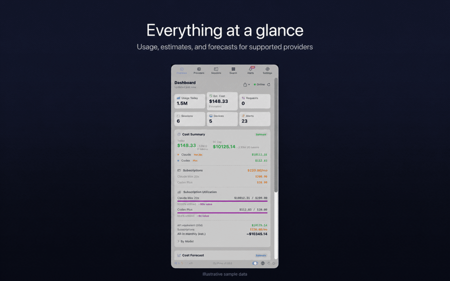
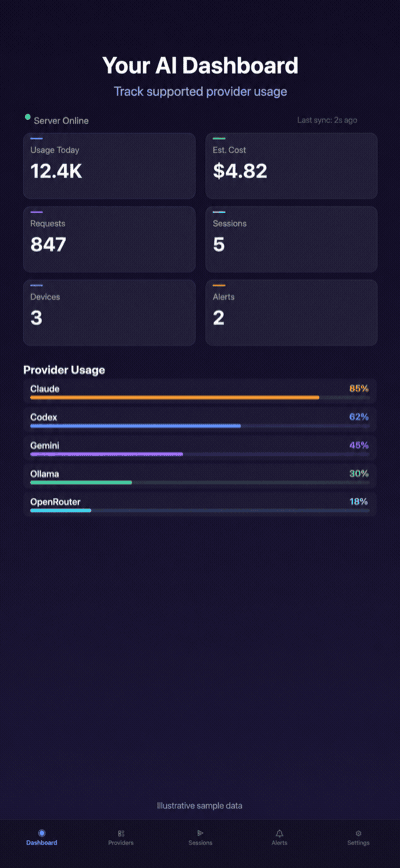
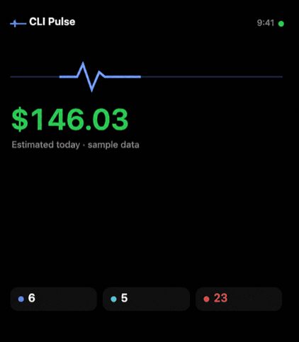

Your AI coding usage,
all in one place
CLI Pulse brings usage, quotas, reset state, sessions, cost estimates, and alerts from your supported AI coding providers into one calm view — on your Mac, phone, and wrist.
Signed and notarized for macOS. Provider credentials stay on your device.


Works with your tools
50+ providers supported across local and cloud coding workflows. Available metrics and controls depend on what each provider exposes.
Know exactly where you stand
See the signals that matter before switching between provider dashboards and local session logs.
Usage & Quotas
Track request counts, token consumption, quota remaining, and reset state across supported providers.
Sessions & Cost Estimates
Review session activity and model usage alongside clearly labeled cost estimates, without presenting estimates as exact billing.
Alerts & Notifications
Keep quota, session, and provider alerts together so important changes do not disappear inside separate tools.
Cross-Device Control
Watch and steer supported Mac AI-CLI sessions from your iPhone or iPad. Check usage from your wrist with the Apple Watch app.
Apple-first, across your devices
Mac, iPhone, iPad, Apple Watch
CLI Pulse spans macOS, iPhone, iPad, and Apple Watch. Use the Mac app for local collection, then check supported usage, alerts, and sessions from your other devices.
Supported mobile clients can watch and steer supported Mac AI-CLI sessions. Android beta extends the core monitoring experience beyond Apple devices.

Three steps to clarity
You're minutes away from one dashboard for the supported AI coding providers you use.
Install CLI Pulse on your Mac
Download from the App Store, get the signed and notarized DMG, or install the Homebrew cask.
Grant access to your AI tools
CLI Pulse discovers supported providers on your system and guides you through the access each source needs. Provider credentials and raw local session-log contents stay on your device.
Monitor from any device
Check supported usage, quota state, sessions, and alerts across your devices. Aggregated usage and quota state can sync to your CLI Pulse account for cross-device access.
Your data, your rules
CLI Pulse keeps provider credentials and raw local session-log contents on your device. Read the policies that explain what stays local and what can sync.
Privacy Policy
What stays on your device, what syncs to your account, and who the sub-processors are.
Data Handling
A table of every data category CLI Pulse processes and where each one lives.
Security Policy
How credentials are protected and how to report a vulnerability.
Terms of Use
The agreement you accept when you install CLI Pulse.
Credentials stay on your device. Provider API keys, session cookies, bridged OAuth tokens, and raw local session-log contents stay on-device. Aggregated usage and quota state can sync to your CLI Pulse account for cross-device viewing. The detailed boundaries and controls are documented in the Privacy Policy.
Get CLI Pulse
Choose an official download for Apple devices, macOS, or the Android beta.
App Store
CLI Pulse for iPhone, iPad, Mac, and Apple Watch.
View on the App Store → StablemacOS DMG
Direct download from GitHub Releases. Signed and notarized for macOS Gatekeeper.
Latest release → BetaAndroid Beta APK
Sideload the Android Beta from GitHub Releases. Availability and controls can differ by release.
All releases →Install on macOS with Homebrew
brew tap cli-pulse/tap
brew trust cli-pulse/tap
brew install --cask cli-pulseHomebrew 6 requires brew trust before it will load casks from a third-party tap — without it the install stops after brew tap.
Questions you might have
What data stays on my device versus syncing to CLI Pulse?
Provider API keys, session cookies, bridged OAuth tokens, and raw local session-log contents stay on your device. Aggregated usage and quota state can sync to your CLI Pulse account for cross-device viewing. See the Privacy Policy for the complete data-by-data breakdown and controls.
How do mobile clients watch and steer Mac AI-CLI sessions?
After the Mac helper and your CLI Pulse account are configured, supported mobile clients can show supported Mac AI-CLI session status and available steering actions. Capabilities vary by provider and client rather than being assumed from a provider name.
Which AI coding providers does CLI Pulse support?
CLI Pulse supports 50+ providers, including Claude, Codex, Gemini, Cursor, Copilot, OpenRouter, JetBrains AI, Ollama, Warp, and Augment. Available metrics and controls depend on what each provider exposes.
How do I get help or report an issue?
For bug reports and feature requests, open an issue on our GitHub repository. For other inquiries, email clipulse.support@gmail.com. We aim to respond within 48 business hours.